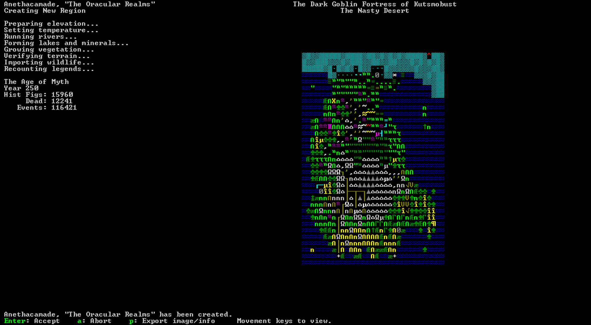
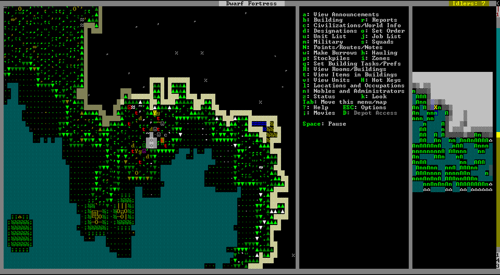
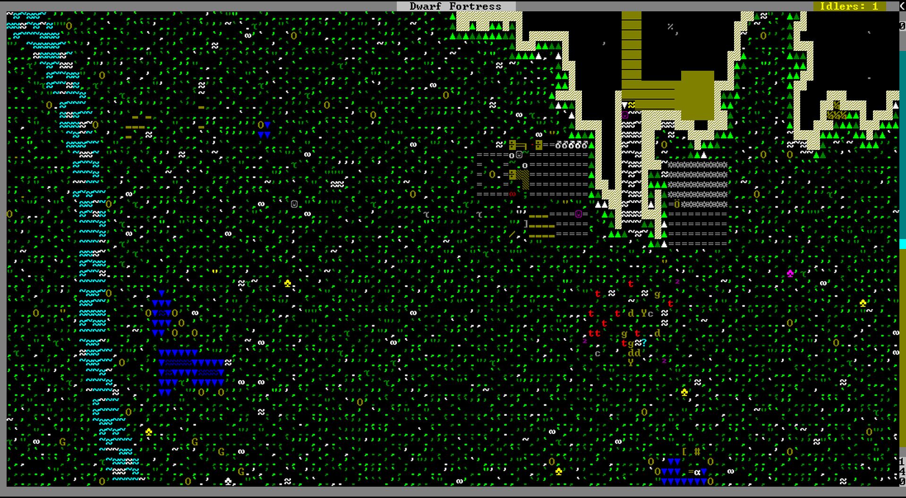

A Beginner's Guide to Dwarf Fortress, by a Beginner
Dwarf Fortress. Some say it's the most inscrutable video game ever. A few say it's the deepest. Most saw the ncurses ASCII interface and never bothered to try playing a game that looks like it predates Windows. A few downloaded it and quit in frustration from the steep learning curve and unintuitive user interface.
I tried it. I downloaded it. I played for a while, built up a fort of over a hundred dwarves over a half dozen years. Then I quit, not from frustration, but from boredom. All I did was craft rock crafts all day long. No goblin wars, no necromancer raids, no forgotten beasts. No pump stacks, no magma, no caverns. I followed all the beginner's tutorials and then got stuck doing nothing, missing out on half the features of the game. But two months ago, on December 1, 2015, Toady One released the first major update since July 2014: Dwarf Fortress 0.42! Now, I thought, was the time to get back into the game, and really get into all its features. The goal of this post is simply to see every major feature, in a picture-only beginner's guide for people who understand the basics but want to see all the fun they could experience, through a playthrough―my first real one―of Dwarf Fortress.
Let's begin.







